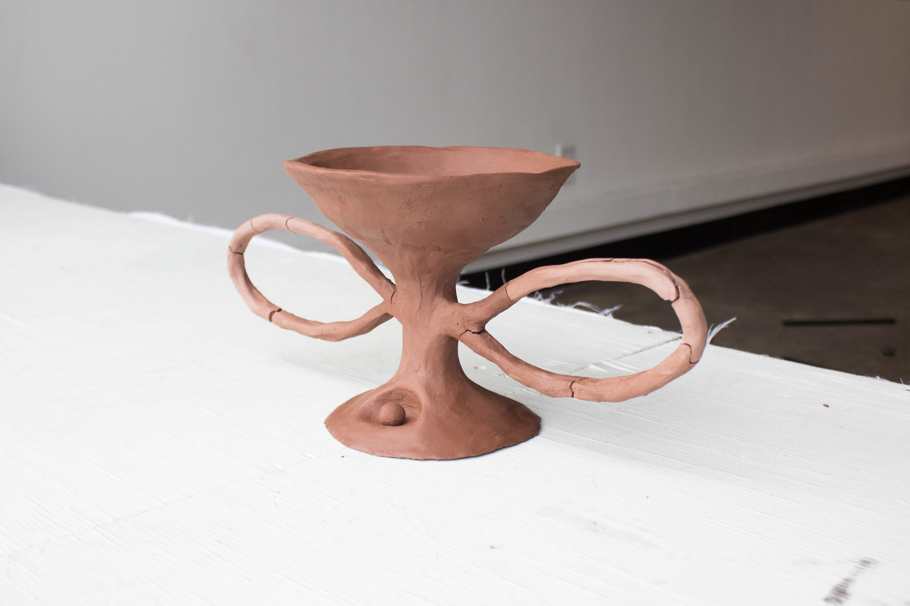
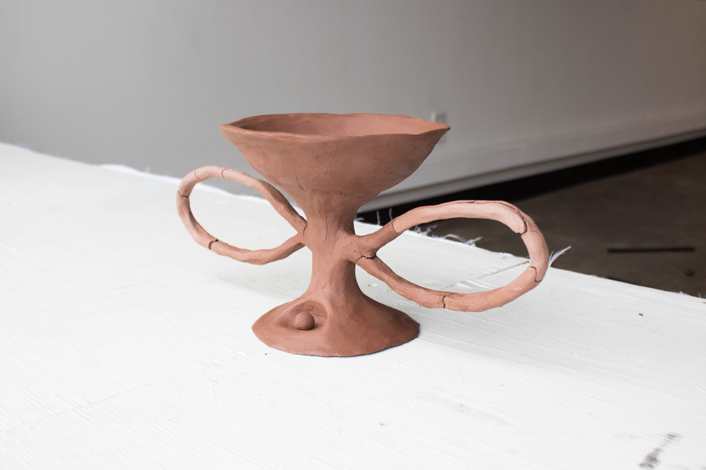
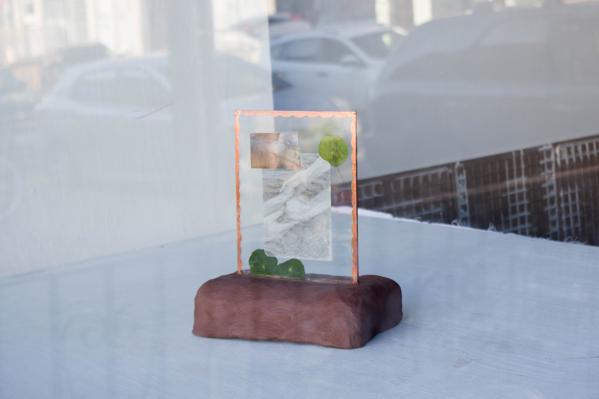
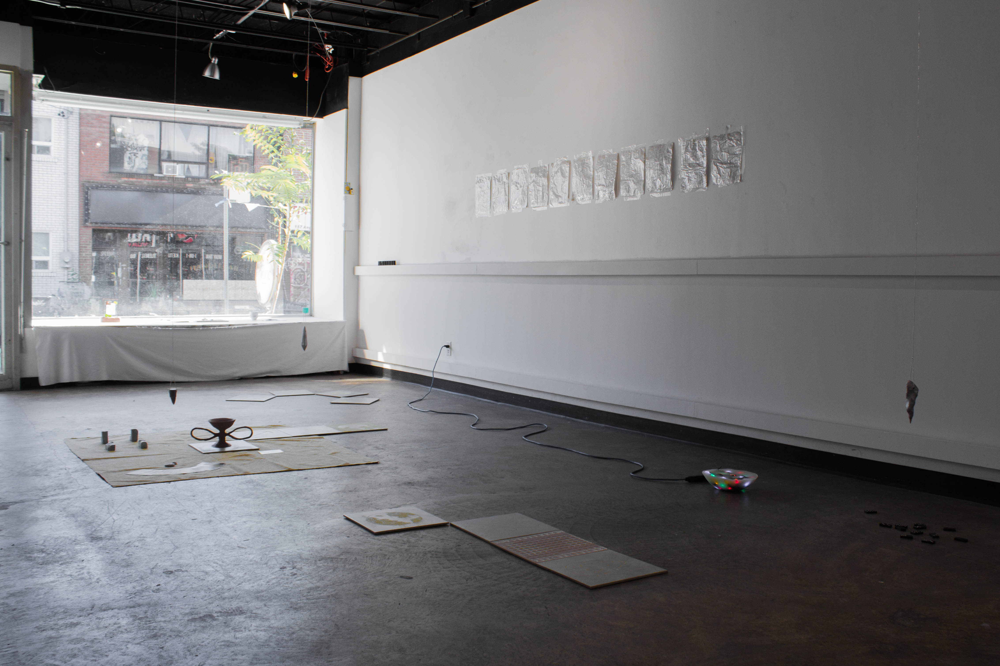
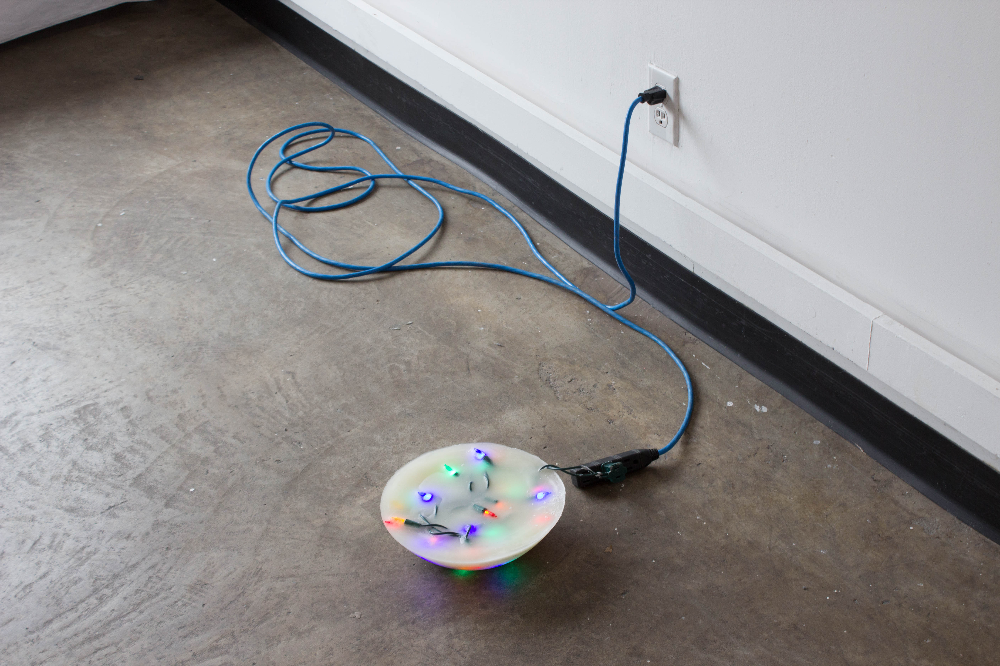
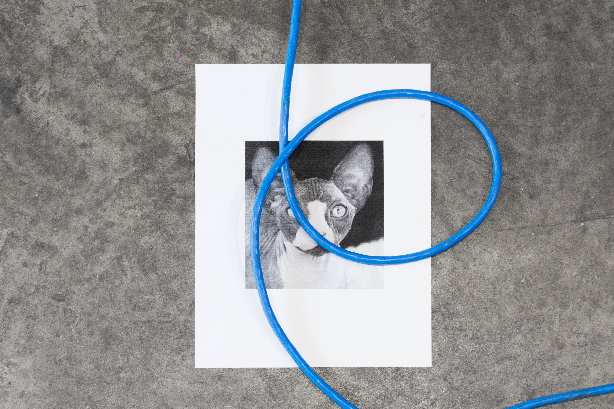

back
9x
156 Studio Projects, October 4th - 12th, 2018
Featuring works by Benjamin de Boer, Rowan Lynch & Philip Ocampo
9x is a site-responsive exercise between Toronto based artists Benjamin de Boer, Rowan Lynch and Philip Ocampo. Founded on an interest in collaboration, process, and trust, the exhibition is reevaluated continually through the course of a 9 day period. In three rotations of three, Ocampo, Lynch and de Boer contribute new works to the space, allowing the exhibition to gradually amass objects as time passes. Works already in the space will be rearranged to accommodate the newcomer, with this process repeated over the course of the exhibition.
 

Rowan Lynch, Vessel, unfired clay, 2018.
Rowan Lynch, If We Had a Dinner It Would Be a Family Dinner, glass, copper foil, unfired clay, collage, 2018.
Exhibition View.
Sculpture by Benjamin de Boer, 2018.
